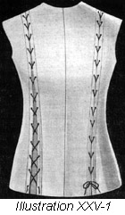
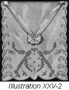
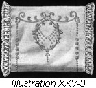
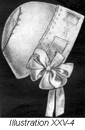
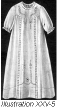
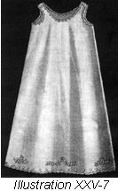
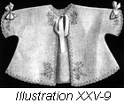
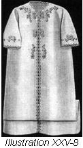
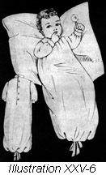
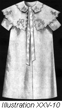

1926—The New-Way Course in Fashionable Clothes-Making
Lesson 25—Maternity Clothes
Making Maternity Clothes
There is an old English proverb, created no doubt by some lover the beautiful, which says: "Whatever piece of dress conceals a woman's figure is bound in justice to do so in a picturesque way." Maternity clothes must, of necessity, be comfortable. But is that any reason why they cannot, at the same time, be good looking and attractive?
After all, the making of maternity clothes does not differ materially from the construction of ordinary clothes. It is simply a matter of making the garment adjustable to the changing figure. And this can be accomplished with as careful a regard for line and color and style as in ordinary clothes.
However, certain special attention should be given the style and lines of the maternity dress. These two important points, as well as appropriate colors, will be taken up in detail later. For the present, bear in mind that maternity clothes may be attractive clothes and that fine texture, simple lines and a style that is gracefully proportioned compose the ideal maternity dress. Add to this the feature of a garment that is easily adjustable to the changing figure, and the "maternity clothes" problem is solved.
The Skirt
Whether separate or part of a dress, a maternity skirt should never be narrow, should never be fitted smoothly and closely across the abdomen. There should be some fullness—either gathers or plaits. An invariable rule that should always be remembered in the making of maternity clothes is that "looseness conceals; tightness reveals."
The simplest made and the most comfortable skirt is the one made with an elastic through the top on which the fullness is arranged. This elastic is usually drawn through a casing made at the top of the skirt. The fullness should be easily adjusted. Some maternity skirts have an extension at the top in front which can be turned over inside of the belt and the front lengthened as desired. To make this type of skirt, a soft elastic is used for the inside belt and the skirt is made as the ordinary skirt is made. Following are step-by-step directions for the making of an excellent maternity skirt.
- Cut the back of the skirt according to your pattern.
- In the front, cut an extension at the top beginning at the side seam and increasing toward the front so that the extension is from two and one-half to three inches wide in the center of the front.
- Mark a line at the top of the skirt pattern on the material with a basting.
- Now face the top of the skirt with a fitted facing, allowing it to come one inch below the line which marks the top of the skirt at the front, and one inch below the top of the skirt at the back.
- Stitch the turned edge of the facing to the skirt by machine, or with a very fine hemming stitch.
- With fine running stitches, make a line across the front of the skirt exactly where the line marking the top of the pattern comes. This forms the casing through which the elastic belt will be drawn across the extension. The material above this casing must be turned in when the skirt is worn.
- As more length is required in front by the changing figure, the line or running stitches at the top is removed and another line put in above. Thus the front length of the skirt drops.
- The placket in this type of skirt should be at the side. However, if this impossible, according to the style of skirt chosen, the placket may be in the back.
The Waist and Fitted Lining (Illustration 25-1)
You will probably want to wear a separate waist with the type of skirt described above. You may select any loose style that appeals to you, but in making the waist, you must be sure that the waistline is finished with an elastic in a casing.
If a fitted lining is desired, proceed in the following manner.
- Cut, baste, and fit exactly as you did the lining for the dress form.
- Stitch all seams their full length, except the side front seams. These must be stitched about six inches from the shoulder down.
- Now cut a piece of tailor's canvas on the bias, one-half inch wide.
- Baste this on the wrong side of the lining, the edge meeting the line of stitching of the side front seam.
- On all four edges of the side front seams, turn over the seam allowance and baste.
- Make a line of machine stitching at the edge of the side front seam to hold the canvas firmly and then make a second stitching one-quarter of an inch back of this.
- Sew hooks on the edges of the side-front seams, exactly opposite each other so that the lining may be laced easily. Place the bill of the hook over the edge of the lining to allow the portion sewed on to be on the wrong side of the lining while the hook part extends over the edge to the right side.
- You are now ready to proceed with the lacing, which is done just as the top of a man's shoe is laced. If you prefer, eyes may be sewed on instead of hooks; or eyelets may be worked as shown in Illustration 25-1. Corset lacer is most appropriate for the lacing.
- Perhaps you will find that the lining wrinkles at the waistline. If so, it will have to be feather boned. This bone may be purchased by the yard at a notion counter. Stitch this in the seams as follows.
- The boning should be about eight inches in length. Cut one-half inch of the bone from between the casing at each end of the bone, turn the casing over this and oversew.
- Pin the bone firmly at the waist-line, allowing three inches above the waist-line and the remainder below.
- Stretch the lining above the waist-line and pin the upper end of the bone to the waist. The bone should spring slightly.
- Below the waistline allow the lining to lay along the bone and pin to the lining at the end of the bone.
- Stitch by machine through center stitching in the bone, or catch-stitch over the bone from edge to edge. If attached with catch-stitching, catch only to the seam edges. If attached with machine stitching, stitch through bone and lining with seam open, making the stitching meet the line of stitching on the seam.
- Bone each seam in this way, except the side-front seams. Pin a bone on either edge of each seam just back of the eyelets or eyes or over the sewed-on end of the hook. These bones will have to be put in with catch-stitching as it is impossible to stitch over the hooks by machine.
Three Important Considerations: Style — Color — Fabric
The simplest styles are the most appropriate for maternity wear. One-piece dresses, when made with sufficient fullness, are splendid as they fall loosely from the shoulders and do not restrict the figure in any way. Dresses should be loosely belted and there should be no tight lines anywhere.
The maternity dress may be just as stylish and up-to-date as you please—providing sensible models are chosen which are easily adjustable and which have no tight lines that expose the figure. Plaited skirts are, of course, excellent and overblouses are as smart as they are comfortable.
There is no space here to delve deeply into the subject of the psychology of colors, but it is known that dull colors have a depressing effect upon the wearer. On the other hand, bright, cheerful colors have the tendency to rouse one's spirits and make one happy and gay. For maternity wear, choose colors that are bright enough to keep your spirits bright, but with enough subdued softness to obviate the possibility of drawing attention to the figure.
Dresses, skirts, blouses, underthings—all should be of soft, supple material. Underwear for maternity wear should be especially comfortable and light in weight. There should be no restriction in maternity clothes whatever, nothing tight or heavy or uncomfortable. Whenever possible, undergarments should hang loosely from the shoulders. Heavy petticoats should be strictly avoided.
The Infant's Layette
What wonderful thoughts of love and care are concealed in the dainty bits of wearing apparel that compose the infant's layette! The miniature wardrobe is the most interesting in the world—and to the fond mother, it is the most important in the world, too!
There are the tiny bibs with narrow lace edges and baby's initial tucked snugly away in one corner. There are the pretty little kimonas that, with their many bows of satin ribbon, remind you of the fluttering butterfly. There are the dainty little dresses, finely tucked and with just a suggestion of hand embroidery on the yoke. All very fine, you murmur as you fondle the important little wardrobe, and quite befitting the wonderful young person for whom it was made.
The materials used for the various garments in the infant's layette should be of the softest and finest one can afford. The garments themselves should always be hand made. Of course, the layette may be as elaborate and fine as one pleases, but following is a list of the usual garments which are found necessary and convenient. One may add to the list as one pleases—but it would not be wise to omit any of the garments listed.
- 3 Dresses
- 3 Day Slips
- 4 Night Slips
- 3 Petticoats (flannel)
- 3 Petticoats (white)
- 2 Kimonas
- 2 Sacks Bibs
- 1 Receiving Blanket
- 3 Pinning Blankets
- 1 Rubber Diaper Cover
- 4 Flannel Bands
- 4 Shirts
- 6 Pairs Stockings
- 3 Pairs Booties
- 1 Coat
- 2 Bonnets
- 1 Veil
- 1 Carriage Robe
- 3 Dozen Diapers
Do not make the mistake, in your loving regard for the young stranger, of making the little things-to-wear elaborate with much unnecessary trimmings. There can be nothing quite so bad as to see an infant overdressed in lacy clothes that chafe the tender skin. Remember that the tiny garments may be severely simple and plain—yet dainty. It is possible to purchase a complete set of patterns including individual patterns for almost all the garments listed above. Other patterns maybe purchased individually. Remember to use soft, fine materials and to make the little garments entirely by hand.
Directions for making the garments mentioned will be given later in detail.
Diapers
Baby's diapers should be made of Diaper cloth or bird's-eye cotton. Each diaper should be 18 inches wide and 24 inches long and finished with a narrow hem made by hand, or by machine using a loose stitch. Be sure that all edges are cut perfectly straight so that the diaper will fold evenly.
Shirt
Shirts for the infant should be bought ready-to-wear. They may be of any knitted material providing it is soft and warm. Silk and wool is very satisfactory. Harsh materials of every kind should be carefully avoided in the infant's wardrobe.
Stockings and Booties
Who doesn't love to fondle the soft, fleecy stockings and booties of the infant! The little booties should be of wool, either knitted or crocheted. Sometimes they are of cloth to match the coat. The stockings should be all wool or silk and wool and long enough to cover the knee. Of course, the stockings should be white—never colored.
Bibs
Bibs may be as elaborate as one pleases—providing there is nothing to irritate the infant's tender little throat. Any material may be used—nainsook is the most popular—and the newcomer's initial may be embroidered in one corner. Bibs usually fasten with narrow satin ribbons or tiny button and buttonhole.
To be perfectly sure that the little dress underneath is kept dry, one may have a quilted bib or a bib made of two thicknesses of material with oiled silk between, underneath the pretty bib.
Bands
Flannel bands are quire important. They should be made of fine flannel, 6 inches wide. The bands should be torn, not cut, and made as long as the flannel is wide, and are never hemmed. They should never be made the length-wise way of the flannel but always on the width. Knitted bands are used after the baby is two or three weeks old. They are much more comfortable than flannel bands.
Diaper Cover
Diaper covers may be purchased ready-made. They should be used only when protection is necessary. Being rubber, they are air-proof, and irritate the child if they are worn too long at one time.
Veil
The veil should be fine white net, well-bound so that it may be washed without injury. Be sure that the web of the veil is fine enough to prevent insects from annoying the infant and dust from falling in its eyes.
Receiving Blanket
The receiving blanket is made of cotton batting covered with cheese cloth and tied as a quilt is tied. It should be about 36 inches square. This blanket is used to wrap the baby in when it arrives. It may be of cheese cloth, as mentioned, or it may be simply a soft warm wool blanket.
Carriage Robe (Illustration 25-2)
Crocheted and knitted carriage robes are quite popular and can be made very pretty and attractive. Robes are also made of very soft material such as Silk Mull or China Silk and tufted just as quilts are.
If an elaborate carriage robe, such as the one pictured, is to be made, use a good quality of pique, stamp an attractive design on it and embroider, using the satin stitch or a combination of satin and other stitches. The edge should be scalloped. A much simpler carriage robe and one quite as attractive is made of white eiderdown. A binding of either pink or blue satin ribbon is put all around the edge. For this use three-inch ribbon and from the same ribbon make a large bow to be used on the robe.
Pillow Covers (Illustration 25-3)
Plain soft linen is the very best material for pillow covers—but it should be as fine and soft as the purse allows. If fine linen is impossible, an excellent quality of soft nainsook may be used. Pillow covers may be plain, hemstitched or embroidered.
Cap or Bonnet (Illustration 25-4)
The cap or bonnet may be made of material similar to the coat or of linen or silk. It may be crocheted, if one wishes, and silk lined. The strings should be of fine wash material hemmed on the edges. One end should have a narrow hem and the other end a wider hem. The end with the narrow hem is attached to the bonnet with baby pins. Be sure that the cap or bonnet is not too large for the infant and that it does not fall down over the eyes.
Two layers of china silk with a very thin layer of cotton or wool batting between and these three layers quilted together makes a very satisfactory lining for baby's bonnet. This must be cut exactly like the outside of the bonnet is cut.
Several sets of strings for each bonnet should be made so fresh ones will always be at hand.
Infant's Dress (Illustration 25-5)
Let us now see how the infant's dress pictured is made. You may use nainsook or batiste of fine quality. Secure the pattern, and proceed in accordance with the following step-by-step directions. No alterations will be necessary.
- Press both pattern and material and place the pattern on the material as directed on the cutting chart which accompanies the pattern. Notice particularly and mark the construction marks and all center lines.
- The line of all edges you wish to finish with embroidery scallops should be marked with a colored basting thread and three-eighths of a half-inch of material should be allowed beyond this mark.
- Cut out the parts of the dress.
- If insertion is to be used, put it in before seaming the garment.
- French seam all seams.
- If seam beading is used, put it in either with a French seam or a roll seam. (Lesson 4.)
- If sleeve bands are used, make as either a sewed-on or set-on extension facing. (Lesson 6.)
- Finish the placket neatly, using either a hemmed or bound type of placket. If you decide on the hemmed placket, make the hem one-half inch wide.
- Decide whether you want the neck to be finished with the embroidery scallops or with lace. If you want the scallops, stamp and work. If you wish the lace edges, attach the lace as taught in Lesson 15.
- Make a plain deep hem on the bottom of the skirt. Finish with a very fine hemming stitch. Hem-stitching and briar-stitching make a pretty finish when well-made.
- Finish with button-holes and buttons. (Lesson 12.)
Petticoats (Illustration 25-7)
The infant will need plenty of practical petticoats to wear with the little dresses. The white petticoats should be of nainsook or some similar soft material.
- Press all material and pattern.
- Place the pattern on the material as indicated in the cutting chart which accompanies the pattern. Mark all construction marks, all center lines—and cut out.
- Be sure that material is allowed and design marked for scallops if this type of embroidery is to be used as a finish on the petticoat.
- Following the construction marks, pin the parts together and stitch, using French seam.
- Make the placket, using either a hemmed or bound placket.
- If the bottom of the petticoat is to be hemmed, make a plain hem and finish with a fine hemming stitch. (Lesson 6.) If the bottom, neck and armcye are to be scalloped, stamp and work.
- A pretty way to finish the petticoat is to add a narrow ruffle to the bottom. It may be made and applied with a French seam (Lesson 3) or it may be a faced ruffle or a rolled ruffle (Lesson 7).
- If the neck and armcye are not scalloped, face with bias facing and sew on a narrow lace edge. To finish, sew buttons and make buttonholes on shoulder.
Flannel Petticoats
The flannel petticoat should be made of the very best flannel. It should be made exactly as the little white petticoat is made. If you wish, the top part may be of fine cotton and just the skirt of flannel, but in the winter, an all-flannel petticoat is the best. The bottom may be finished with a plain hem or embroidered in scallops.
Kimonas and Sacks (Illustrations 25-8 and 9)
Kimona and comfort are synonymous—and the infant's kimona should certainly be as comfortable as possible. It is usually made in one piece, being cut with body and sleeves in one. It may be developed of Flannelette, French Flannel, Albatoss or Challie.
- Press pattern and material, mark center lines and all construction marks, and cut out.
- If the kimona is to be lined, cut out a lining at this time, making it exactly the same size and shape as the outside.
- Baste the kimona according to construction marks for plain seam and baste the lining for plain seam. Make the seams on the wrong side.
- Make either a bound or fell seam if the kimona is unlined.
- If lined, make an underturning of one-half inch on both lining and outside edges.
- Place the lining and outside together, the wrong sides facing each other.
- Beginning at the armcye, matching the notches on the outside, baste the edges of the seams together with fine even basting stitches to within two inches of the bottom of the kimona and to within one inch of the end of the sleeve. This should be done on both under arm seams.
- You are now ready to baste the lining smoothly to the outside and blind-stitch the two together.
- Perhaps a binding will be desired at the edge of the kimona. In this case, do not make the turn on the edge, but baste the lining and outside together quite close to the edge, and bind.
- If no lining is used either bind all the edges or stamp and work in scallops.
Sacks are usually crocheted or made of any soft woolen material. They are made in exactly the same way as the long kimona—for indeed, they are nothing but kimonas cut short! but they may be made prettier than the kimona, with pink or blue ribbons and perhaps crocheted pompons to add a note of trimming.
Slip (Illustration 25-6)
The day or night slip may be made by following the same directions for the making of the dress. However, all embroidery and seam beading is omitted and the slips made as severely plain and simple as possible. The bottom is simply hemmed and if desired a drawstring drawn through the hem. This keeps the clothing over the feet. Be sure, though, that the slip is sufficiently long to prevent cramping of the little feet.
In making slips, the neck is finished with a bias facing and the sleeves are finished with a sleeve band. If so desired, the neck and sleeve band may be edged with very fine, narrow lace.
Day slips should be made of nainsook or very fine long cloth. Night slips for a summer baby may also be of nainsook, but for a winter baby they should be flannelette.
Pinning Blanket
The pinning blanket is one width of flannel, the length required, hemmed on three sides. A band, which is an extension facing either set on or sewed on, is added. It may be of any width desired.
The Coat (Illustration 25-10)
Very important, indeed, is the coat in which the young visitor views the outside world for the first time. To do justice to his own chubby prettiness, it must be a dainty coat with soft warmth. But to do justice to mother's frank pride, it must be a decidedly attractive coat with embroidery and ribbons and pretty silk lining.
The construction of the coat follows very closely the construction of the other garments. Be sure, first, that your material is entirely free from wrinkles. Press the pattern also. It will require no alterations. In making this coat, be careful to remove all bastings and to press all seams as the work progresses. This goes a long way towards enhancing the appearance of the finished garment.
- Pin the pattern to the material as directed in the cutting guide accompanying the pattern. Mark all construction marks and all center lines before cutting.
- You will probably want the coat to be lined. In this case, the lining should be cut before proceeding further, and it should be the same shape and size as the outside.
- Baste the coat together for plain seam, if the lining is to be used, and for bound seam if the coat is to be unlined. Stitch the seams.
- If the coat is unlined put in the sleeves and finish with a binding.
- You are now ready to make the collar and cuffs. If embroidery scallops are to be used as a finish, stamp and do this work before applying the collar and cuffs to the coat. Be very careful that the unfinished edge of these pieces do not stretch. It is wise to run a line of machine stitching near the unfinished edge to avoid this possibility of stretching.
- If the edges of the collar and cuffs are to be plain, face with bias facing, turning to the wrong side. Hem the facing down with a fine hemming stitch or finish with a briar stitch on the right side to hold facing down. Or, if you prefer, this edge may be bound with a bias binding of the coat material or silk.
- The collar and cuffs should be basted on with the seam on the right side in an unlined coat. Place the wrong side of the cuffs and collar to the right side of the coat. Baste a bias facing on and stitch the three thicknesses at one stitching. Baste this facing down very carefully and hem with any hemming stitch. You will remember, from previous lessons, that this is a sewed-on facing.
- In a lined coat, the collar and cuffs are basted on as above, with the exception that the bias facing is omitted. Stitch the collar and cuffs on and turn the seam flat to the sleeve, basting firmly.
- All edges of the coat and the lining should be turned and put together exactly the same as in the lined kimona. Blindstitch these edges together. The lining finishes the seam where the collar and cuffs are attached.
- Baste the seam of the lining for the sleeve firmly to the seam of the outside sleeve, hemming the end down to cover the seam that attaches the cuff to the sleeve.
- The sleeve should now be basted in the armcye in accordance with the notches. (Do not baste sleeve lining.)
- Stitch the sleeve in. Remove bastings from the armcye.
- At the top of the sleeve lining, make a one-fourth inch underturning. Match the notches and seams of the lining to the notches on the body of the coat, and the seam of the lining to the seams of the sleeve.
- Now hem this lining in to hide the line of machine stitching.
- If the coat is unlined, bind the sleeve with bias binding which should be stitched in at the same time that the sleeve is stitched, then turned over and hemmed down to hide the line of machine stitching. (Make this a binding, not a facing.)
- Hem the bottom of the coat, if it is unlined.
- You may, if you wish, use a quilted lining in the infant's coat. It adds a certain touch of cozy warmth which is as attractive as it is comfortable for the child. If you do not recall the method of quilting, turn back to Lesson 13 and review it carefully.
- Finish with buttons and buttonholes.
Baby Bunting or Infant's Outdoor Sleeping Bag
This sleeping bag should be made of soft warm material such as eiderdown or flannel and may or may not be lined. Of course, if made of flannel it is necessary to line it to make it warm enough. A quilted lamb's wool lining covered with silk will keep baby warm and comfortable.
The pattern for this little sleeping bag can be purchased at the pattern counters and is in three pieces; the front, the back and the hood. The back has the shoulder and neck line shaped while the sides and bottom are straight. The front has the shoulder and neck line shaped and the sides and bottom are straight while the center front is cut to lap several inches.
- Prepare your material and pattern as for any other garment.
- Cut material according to pattern, marking off construction marks
- Remove pattern and baste the bag together, matching construction marks. Stitch seams, making plain seam. If the garment is unlined these seams should be oversewed. If lined, seam up the lining just as you have the outside, and baste the two together, matching construction marks.
- With ribbon three inches wide bind each edge at the center front.
- Now seam across the bottom with the front lapping as indicated in the pattern. Make this a plain seam and oversew.
- Make the hood. The lining of the hood should not be interlined with wool but should be lined with silk, even if the coat is unlined. Baste the lining in the hood, the seams matching those of the outside and the edges even. Bind the edge of the hood with the satin ribbon. Three quarters of an inch from the stitching which holds the binding, make another stitching. This is to form a casing through which a ribbon may be run, the ends to be brought through to the right side at the seam in the top of the hood.
- Baste the hood and lining to the outside of the bag and stitch in a plain seam. (The seam on the wrong side.)
- Bring the lining of the coat up over this seam and fell down with fine stitches.
- Work buttonholes on the right hand side of this garment where their position was marked when the garment was cut. Sew buttons on the other side to match.
When baby is to be put in this bag, simply open it all the way down the front, lay him inside and button the bag down the front. Draw the hood snugly around the face and tie at the top of the hood.
The Charm of Motherhood
In this lesson you have learned about maternity clothes and infant's clothes—two phases of clothes-making which should be of particular importance to every woman. For after all, is there anything more beautiful than motherhood, and anything more fascinating than creating tiny bits of dainty wearing apparel for the little being that is so tender and helpless?
Into the making of the infant's layette goes all the love, all the devotion, all the inexpressible yearning which for generations has symbolized motherhood. Every stitch in the tiny wardrobe is a stitch of love. Every bit of lace and ribbon, every tiny cape and petticoat, is a gift on the altar of motherlove. There is nothing in all the world quite as beautiful and worth-while as the making with one's very own fingers, the little garments that an infant is to wear.
Anyone can buy baby clothes ready-made. Anyone can go into a store and ask for an infant's layette—all ready-made. But it is the mother whose tenderness for her child reaches depths of infinite love, that makes every stitch of the tiny layette herself and weaves into each row of dainty stitching a message of welcome and blessing of the little being who is to wear the mother-made clothes.